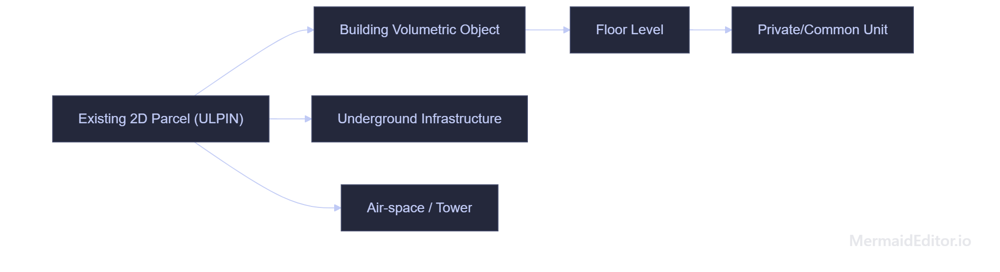
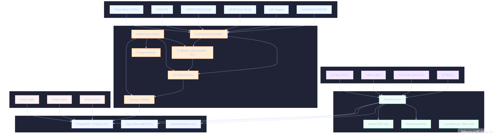
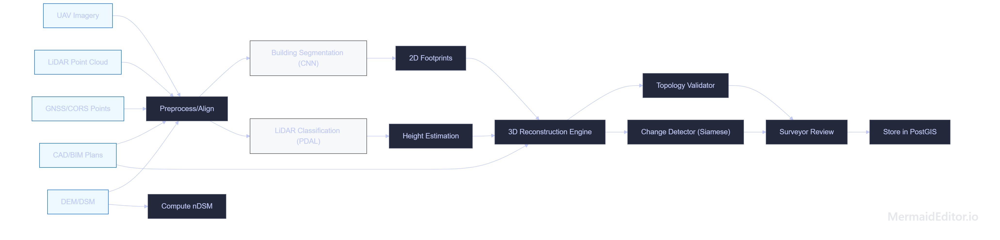

India’s land administration is undergoing rapid digital transformation. The Digital India Land Records Modernization Programme (DILRMP) has computerized ~95% of rural land records and ~68% of cadastral maps. A key innovation is the Unique Land Parcel Identification Number (ULPIN or “Bhu-Aadhaar”), a 14-character code tied to a parcel’s geographic location. Over 66% of agricultural parcels have been assigned ULPINs as of 2026. This georeferenced 2D base immensely improves transparency and dispute resolution.
Nonetheless, 2D cadastres are insufficient for modern urban and infrastructure challenges. Consider a plot with a 5-story apartment building and an underground parking: residents on different floors have distinct rights, yet under a 2D system they all share one ULPIN. Likewise, buried utilities or elevated metro lines overlap existing parcels. Without volumetric modeling, authorities cannot fully capture ownership or enforce rules that depend on elevation (e.g. maximum building height, minimum clearance).
Concurrently, India’s SVAMITVA scheme has demonstrated large-scale geospatial mapping: UAVs have surveyed over 90,000 rural villages to create property maps and issue 1.08 crore property cards. The Survey of India uses survey-grade drones and CORS references to ensure ±5 cm accuracy in these village maps. This shows India’s growing capability in precision geospatial data, which our proposal also leverages.
Problem statement: How can India augment its existing ULPIN-based cadastre to capture multi-level ownership and built structures, while remaining compatible with current laws and workflows? We propose BHARAT 3D: a layered model where each 2D parcel (ULPIN) may host subordinate 3D spaces. Our objectives are:
Singapore’s Land Authority (SLA) maintains a modern, coordinate-based cadastral system. Since 2004, all surveys use the SVY21 datum and a tightly controlled survey network. This allows very precise placement of parcels and strata lots. Singapore introduced strata titles (for condominium units) in the 1960s, layering apartment ownership on a ground parcel ID. Subterranean and air-space subdivisions (for tunnels or telecom towers) are also supported by referencing the original surface lot. Importantly, SLA kept the base parcel ID intact and added layers for vertical units, illustrating our “inherit and extend” strategy. The Singapore model also highlights rigorous survey verification: every proposed change is checked against permanent ground markers and control networks, a practice we incorporate as the human-in-loop review.
The Dutch Kadaster pioneered 3D cadastral concepts. Early studies (Stoter & Ploeger 2003) identified multi-level housing and underground rights as motivations for 3D registration. Their approach, aligned with ISO 19152 (LADM), treated 3D legal spaces as separate “spatial units” linked to 2D parcels. In a 2013 prototype, they stored volumetric objects (e.g. building solids) in a 3D database, while maintaining traditional 2D rights records. Key lessons: (a) Existing legal infrastructure can remain largely 2D if each 3D unit is an extra record; (b) visualization (CityGML models, 3D GIS) aids stakeholders, but the core is the data model of objects and rights; (c) accuracy requirements are strict (survey tolerances) – hence our explicit surveyor verification step. The Dutch work reinforces that BHARAT 3D should be incremental: we do not replace ULPIN, we only add new record types (Building, Floor, Unit, Infrastructure) with reference to it.
Several jurisdictions have piloted 3D cadastres (e.g. Sweden, Australia, Czech Republic). A 2020 review noted that while many have surveyed 3D objects, very few have operationalized them in law. Common challenges include defining air/subsurface rights and integrating BIM. Our approach avoids diving into legal reform; instead we assume the cadastral system is willing to store 3D objects as metadata, and put the onus on surveyors to attach those objects to existing laws. In practice, a government or court would need to validate any new 3D registration, beyond our technical scope.
Figure 1 illustrates the hierarchical model. Each 2D parcel (ULPIN) is the root. An envelope Volume (Building) is created above/below it. That volume is subdivided into Floors, and floors into Units (e.g. apartment units, common areas). Separately, the same parcel can be linked to Infrastructure volumes (tunnels, vaults, utility corridors) and Air-volumes (e.g. defined by height restrictions). Thus a multi-story block yields multiple registered “objects” all linked to one ground parcel.

Fig. 1. Conceptual hierarchy: a ULPIN-bound parcel (2D) can host a 3D building, which contains floors and units; utilities (tunnels) and air-rights can also attach to the same parcel.
We introduce a research notation for object IDs. Let the root ULPIN be ULPIN. A building object under it might be assigned VPRID = [ULPIN]/B-[building-id]. Floors add a segment /F-[floor], and units /U-[unit]. For example, ULPIN/BLD-001/F-03/U-05 identifies Unit 5 on Floor 3 of Building 001. To encode the 3D extent, a suffix (e.g. #OCT-hex) could add a hash of the geometry, but that is optional. This hierarchical ID aligns with ISO 19152/LADM principles: each spatial unit has a unique identifier, independent of any rights or restrictions it may carry. In practice, VPRIDs would be machine-generated and stored alongside ULPIN in the cadastral database.
Formally, let a parcel footprint be a planar polygon P. A volumetric unit V is defined by a horizontal base subset P'⊆P and a vertical interval [zmin, zmax]. For a floor F composed of units Ui: F = ⋃i Ui, where Ui = Pi × [zi, zi+hi]. We enforce that interiors of distinct Ui do not overlap (non-overlap constraint) and that each Ui is a valid 3D solid (closed, manifold). Topologically, a building volume should be genus-0 (no holes) and watertight. In implementation, each candidate volume is checked via a geometry engine: Euler characteristic, no self-intersections, and disjointness of separate units. This ensures data quality before registration.
Figure 2 shows the five-tier platform design. It adopts a modern web architecture (similar to existing e-governance systems) with spatial emphasis.

Fig. 2. System architecture (five-tier). Multi-modal data (left) are preprocessed and fed into AI/3D workers. Clients connect via API. Spatial results are stored in PostGIS 3D and used by compliance engines. 3D visualization uses 3D Tiles.
Figure 3 zooms into the spatial data workflow. Raw sources are georeferenced to a common CRS using GNSS control points. Key steps:

Fig. 3. Data-fusion pipeline. Raw inputs are georeferenced, then AI extracts building footprints and height. A 3D reconstruction module fuses all data into a candidate model, which is then topology-checked and sent for surveyor approval.
The AI pipeline has modular components:
All AI-derived 3D objects are provisional. The final step is a Surveyor-In-The-Loop: a human checks and edits the model in a 3D viewer. Only after the surveyor digitally signs off does the system record the 3D object as official. This mirrors current practice (legal survey reports) and ensures accountability.
Fig. 4. AI-assisted 3D reconstruction: inputs feed segmentation and LiDAR analysis, producing a candidate 3D solid; detected changes are noted; a surveyor then reviews and finalizes the model.
We reviewed two student prototypes. Partha-Shankar/011 (GitHub) contains a skeleton FastAPI server and some GIS functions. It defines database schemas for parcels and buildings, but lacks implemented AI modules or a 3D viewer. The UI is minimal. 3dulpin (GitHub) has sample scripts for data ingestion and a simple UI, but no end-to-end workflow. Both lack test data and do not fully implement the 3D topology or VPRID concepts. However, they illustrate basic frameworks. Gaps identified: no automated mesh generation, no schema for floors/units, and limited error handling. These will guide our full prototype development.
We outline planned experiments. Actual results are future work (marked TBD).
| Experiment | Metric(s) | Notes |
|---|---|---|
| Building Footprint Extraction | IoU, Precision, Recall | Compare AI-predicted roof outlines vs ground-truth parcel data or hand-labeled footprints. |
| Height Estimation | Mean Abs Error (m), RMSE (m) | Compare predicted roof heights to LiDAR-derived heights or field surveys. |
| 3D Topology Validity | Count of geometry errors (non-watertight, overlaps) | Automated check of candidate solids; score should be zero errors post-correction. |
| Database Query Performance | Query latency (ms) on PostGIS | Measure average query times for spatial lookup by ULPIN, VPRID, and by-location with increasing database size. |
| Change Detection Accuracy | Precision, Recall | On a test set of known construction changes, measure detection rates. |
Datasets: We assume a sample city block with known building shapes and LiDAR (e.g. an open OSM/LiDAR dataset) for initial tests. Compliance tests will use hypothetical zoning rules. All benchmarks will be noted as “TBD” until implemented.
BHARAT 3D bridges India’s land records with modern 3D capabilities. Unlike a mere 3D mapping tool, it ties each 3D object to legal metadata (owner, rights, source data). For example, a condominium unit’s 3D solid in the database has fields: VPRID, parent ULPIN, owner info (linked from registration), creation date, and GIS metadata. This integration of geometry and land registry is the core contribution.
We adhere to international standards to maximize interoperability. Using CityGML (or its JSON equivalent) means detailed semantic models (e.g. roof types, construction year) can be encoded. For large-scale visualization, 3D Tiles allows streaming entire cityscapes in the browser. However, data standardization does not eliminate governance needs: our system still requires human validation. The digital surveyor review is essential to meet legal evidentiary standards (as in Singapore and Dutch practice).
Potential impacts: Urban planning officials could query the 3D database for floor-area calculations, shadow studies, or subsurface utility conflicts. Land records would become richer: a landowner could retrieve the 3D boundary of their apartment. Financial institutions might use 3D property models to assess collateral. These applications hinge on having accurate, linked 3D data; our architecture enables that.
We have outlined BHARAT 3D: a research blueprint for 3D cadastre in India. By respecting the existing ULPIN system and using AI-assisted 3D modeling with human oversight, we seek a practical path forward. The key innovation is the layered identifier (ULPIN→VPRID) that connects 2D parcels to volumetric objects. Our architecture integrates heterogeneous data and modern web-GIS standards to deliver 3D insights without disrupting current processes. Though experimental results are pending, this framework provides a clear direction for implementation and study. The next steps include building the prototype components, testing on pilot regions, and iterating with stakeholders to refine the approach.